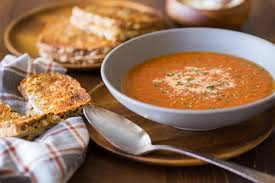

Våra recept
Lär dig att laga mat som ett proffs! Här finns enkla och vardagliga recept för dig som älskar mat.
Krämig tomatsoppa med tillbehör
Ingredienser:
- 500 g tomater
- 1 paprika
- 1 gul lök
- 2 vitlöksklyftor
- 1 grönsaksbuljong
- 1 dl grädde
- 1 msk tomatpuré
- 1 msk olivolja
- 3dl vatten
- Salt och peppar
- Paprikapulver
- Chili flakes
- Oregano
- Timjan
- Färsk basilika (till garnering)

Instruktioner:
- Skala och hacka löken och vitlöken.
- Hacka tomaterna och paprikan.
- Hetta upp olivolja i en kastrull och fräs lök och vitlök tills de är mjuka.
- Tillsätt tomatpuré och rör om i någon minut.
- Lägg i de hackade tomaterna, paprikan, grönsaksbuljongen och 3dl vatten.
- Låt soppan koka i 15-20 minuter.
- Mixa soppan slät med en stavmixer.
- Tillsätt grädde, smaka av med kryddor och låt sjuda i ytterligare 5 minuter.
- Servera med färsk basilika.

Indisk tikka masala med basmatiris och naanbröd

Lyxig räksmörgås med citron och tillbehör

Chokladfondant med vaniljglass

Stark köttgryta med pasta

Souvlaki med stekta grönsaker och vitlökssås

Dumplings med soja och chili

Fläskkotletter med äpple och bacon

Ugnsrostad lax med dill- och citronkräm, serverad med sparris